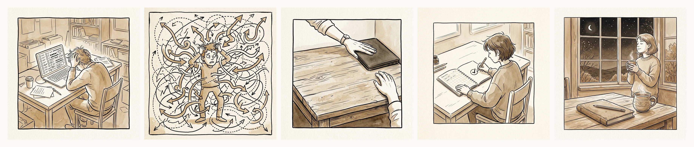
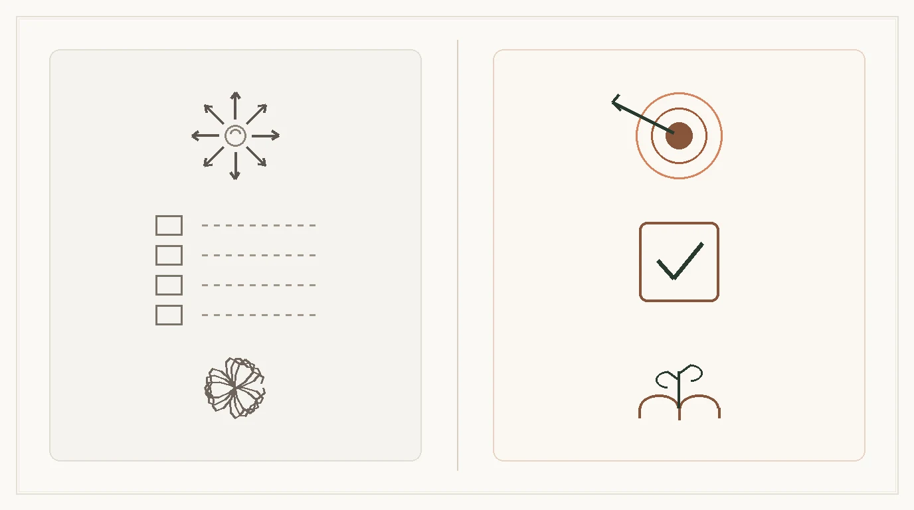

A mediados de octubre suele producirse un espejismo peligroso en nuestra rutina de trabajo. Septiembre se consumió en la inercia del regreso, en ordenar bandejas de entrada y reanudar proyectos con el entusiasmo renovado de quien estrena curso. Pero cuando las hojas caen con paso firme y las mañanas se vuelven frías, la realidad del último trimestre del año se desploma sobre la mesa: calendarios atiborrados, objetivos anuales que amenazan con quedarse a medias y una sensación sorda de asfixia que ningún gestor digital de tareas logra aliviar.
Es entonces cuando caemos en la trampa más extendida de la era moderna: creer que la solución al desbordamiento mental es abrir una nueva pestaña, crear otra base de datos en Notion o rellenar una lista con veinticinco casillas pendientes en el móvil. Creemos que anotar una tarea equivale a controlarla; en realidad, solo estamos multiplicando el ruido.

Esta secuencia visual de cinco viñetas resume con precisión quirúrgica el drama invisible que miles de personas experimentan cada mañana frente al escritorio. Observa la primera viñeta: el protagonista sentado a las once de la mañana, con la cabeza entre las manos, la mirada vidriosa y la espalda vencida. La pantalla del portátil no muestra un trabajo creativo ni un texto fluido; muestra una cascada abstracta de casillas de verificación que se amontonan hacia el infinito, acompañadas de puntos de aviso que reclaman su cuota de energía mental.
La consecuencia inmediata de ese exceso es la segunda viñeta: la parálisis por fragmentación. El personaje se encuentra de pie, atrapado en un remolino de líneas punteadas y flechas divergentes que tiran de él hacia todas las direcciones imaginables. Es la metáfora perfecta del «día ocupado pero estéril»: has contestado cuarenta mensajes, has tachado cuatro trámites irrelevantes, has saltado de un asunto a otro cada siete minutos, pero cae la tarde y tienes la dolorosa certeza de no haber avanzado un solo milímetro en aquello que verdaderamente importaba.
1. La ilusión de la fricción cero: Por qué las aplicaciones digitales sabotean tu foco
Para entender por qué las listas digitales nos abruman, debemos examinar la física de los soportes. El software moderno está diseñado bajo el dogma de la «fricción cero»: pulsar una tecla y crear una tarea es un acto que no cuesta energía física. Puedes añadir cuarenta recordatorios en treinta segundos. La pantalla digital tiene una capacidad infinita de almacenamiento.
Sin embargo, tu cerebro no tiene capacidad infinita. Tu energía ejecutiva diaria —esa reserva biológica de glucosa y neurotransmisores que reside en el lóbulo frontal— es un recurso estrictamente limitado. Cuando una herramienta te permite programar veinte tareas para un solo día, no te está ayudando a planificar: te está vendiendo una mentira reconfortante que se convertirá en culpa cuando den las seis de la tarde y dieciséis de esas tareas sigan intactas.
La investigación neurocognitiva ha demostrado reiteradamente tres efectos destructivos de las listas digitales interminables:
- El coste del cambio atencional (Attention Residue): Cada vez que tus ojos recorren una lista con quince elementos no resueltos, una parte de tu corteza cerebral se queda anclada en cada uno de ellos. Aunque intentes centrarte en redactar un informe, los catorce ítems restantes siguen consumiendo ancho de banda mental en segundo plano.
- La falsa equivalencia del tachado: En una aplicación digital, marcar la casilla de «responder al correo de felicitación» produce exactamente el mismo estímulo visual que marcar «terminar el borrador del libro». El cerebro, adicto al alivio fácil, tiende a realizar las tareas menores y postergar sistemáticamente la única tarea crítica que le exige esfuerzo profundo.
- La ausencia de horizonte temporal: Las listas digitales no tienen peso, no tienen bordes físicos y no transmiten el paso del tiempo. Crean la ilusión de que el día es un contenedor elástico donde todo cabe, fomentando un optimismo tóxico que invariablemente termina en agotamiento y frustración.
«No necesitas más horas ni una aplicación más sofisticada. Necesitas la valentía de elegir qué es lo único que harás hoy y la serenidad de aceptar que el resto puede esperar.»
2. El punto de inflexión: El corte físico de la tercera viñeta
Detén la mirada por un segundo en la tercera viñeta de nuestra tira. Observa las manos del protagonista: no están acariciando el teclado ni buscando un atajo de pantalla. Están ejecutando un corte tajante y físico: bajan la tapa del ordenador portátil y lo deslizan suavemente hacia la esquina superior del escritorio, liberando el centro del tablero de madera.
Ese movimiento muscular es un acto de soberanía personal. En un mundo donde todo nos empuja a la disponibilidad permanente, cerrar la pantalla sobre la mesa es una frontera táctil que le dice al entorno: «aquí comienza mi espacio de pensamiento». Al apartar el brillo del cristal, la respiración se desacelera de inmediato. Los ojos dejan de recibir la luz transmitida de onda corta y el cerebro recibe una señal inequívoca: la fase de reactividad ha terminado; empieza la fase de intención.
Es precisamente en ese centro despejado de la mesa donde tiene lugar la verdadera productividad analógica.
3. La anatomía del contraste: Un mapa de símbolos limpios
Para apreciar con total claridad la diferencia entre los dos modelos de trabajo, hemos sintetizado el dilema en nuestro mapa conceptual simbólico. Observa que no contiene palabras ni tecnicismos; los propios iconos hablan directamente a tu intuición visual:

En el panel izquierdo encontramos el territorio del ruido digital. Arriba, una estrella de ocho flechas que tiran en sentidos opuestos, simbolizando la incapacidad de sostener un rumbo claro. En el medio, una columna de cuatro casillas desdibujadas con líneas de puntos que se pierden hacia la nada: la tarea que se pospone un día, y otro, y otro más, convirtiéndose en un reproche crónico. Abajo, el nudo enmarañado de líneas circulares que representa el sobrecalentamiento cognitivo del trabajador moderno.
En el panel derecho, en cambio, la imagen se despeja hacia el territorio del foco analógico. Arriba, una diana limpia con círculos concéntricos en tonos tierra y una sola flecha firme que da exactamente en el centro: la elección deliberada de un único blanco. En el centro, una sola casilla sólida y redondeada con una marca de verificación trazada con calma y determinación. Y abajo, un cuaderno abierto del que brota una pequeña rama con dos hojas verdes: la metáfora del crecimiento sostenible, de avanzar paso a paso sin quemar la corteza ni agotar las raíces.
4. La regla de la prioridad única: La cuarta viñeta en acción
Llegamos así al corazón del método, ilustrado con belleza y calidez en la cuarta viñeta de nuestra historia: el protagonista, sentado con postura erguida y tranquila, sostiene un lápiz de madera sobre una página en blanco de su planificador de papel. En el centro de la hoja ha dibujado un único círculo y una sola casilla. Nada más.
Esta es la regla innegociable de la prioridad única diaria. No se trata de fingir que no existen llamadas telefónicas, facturas o tareas rutinarias de mantenimiento; todos tenemos compromisos logísticos cotidianos. Se trata de reconocer que solo una tarea al día tiene la categoría de hito transformador. Si completas esa única tarea antes del mediodía, el día ha sido una victoria rotunda, pase lo que pase después.
¿Por qué el papel es el único soporte capaz de blindar esta regla? Por tres razones fundamentales:
- El límite del lienzo físico: Una hoja de un planificador de 6x9 pulgadas no tiene una barra de desplazamiento vertical. Si defines un espacio exclusivo para «La Prioridad de Hoy», físicamente no cabe una segunda prioridad. Esa estrechez voluntaria te obliga a discriminar lo esencial de lo accesorio antes de empezar la jornada.
- El compromiso muscular del grafito: Escribir con lápiz exige presionar la madera contra la celulosa. Ese acto motor activa el sistema de activación reticular ascendente (SARA) de tu cerebro, fijando la intención en tu memoria con una intensidad neuroquímica que ninguna pantalla táctil puede emular.
- La permanencia serena del progreso: Al finalizar el día, contemplar una página física donde una sola casilla está tachada con grafito produce un cierre psicológico definitivo. La mente reconoce que el trabajo ha concluido. No hay pestañas titilando en la oscuridad de la habitación.
5. El atardecer de la quinta viñeta: El descanso merecido
Observa el desenlace en la quinta viñeta: el protagonista se recuesta en su silla, sosteniendo una taza caliente entre las dos manos, con una sonrisa apacible dibujada en el rostro. Sobre la mesa, el cuaderno de planificación descansa cerrado, con el lápiz posado en paralelo sobre la cubierta. A través del ventanal, la luna asoma sobre las copas otoñales de los árboles bajo un cielo limpio y estrellado.
Ese es el objetivo final de Menos Ruido: no que seas una máquina de rendimiento inhumano, sino que recuperes el derecho a terminar tu jornada en paz. Que cuando den las siete de la tarde puedas cerrar la tapa de tu cuaderno, apagar las pantallas y volver a tu vida, a tu familia, a tus lecturas o a tu descanso con la mente limpia y el corazón sereno.
¿Cansado de arrastrar listas que nunca se terminan?
Prueba gratis nuestro método en pantalla o descubre el Planificador de 90 Días en papel: una sola prioridad principal cada mañana, 13 semanas atemporales y estructura anti-burnout para avanzar sin quemarte.
Mañana por la mañana, haz la prueba: no abras el gestor de tareas al despertar. Coge una hoja en blanco, elige una sola cosa importante y dale a tu día el foco que se merece.